JetRacer Kit Carbon Edition ４GBモデル 組み立て
対象モデル
| コード番号 |
|---|
| コード番号：JR1-S-C-B |
| コード番号：JR1-NV-C-B |
TT-02をベースにJetRacer Kitを組み立てます。
※車体レスモデルは、お客様でご用意ください。
カメラマウント、LEDマウントの組み立て
| 写真 | 部品または工具 | 個数 |
|---|---|---|
 |
CAM026 IMX219-160° | 1個 |
| 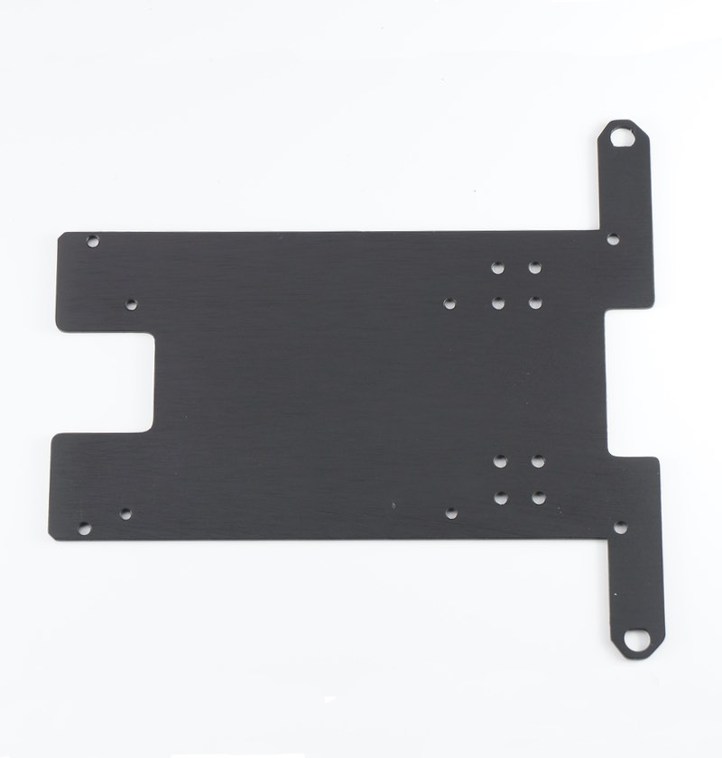 | 拡張ボディアッパーパネル 材質：アルミニウム |
１枚 |
| 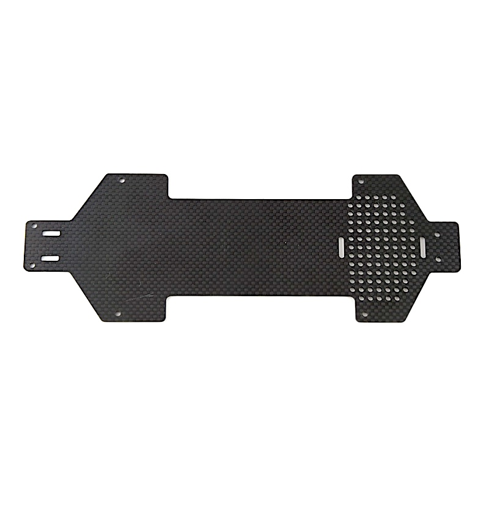 | 拡張ボディカーボンロワーパネル | 1枚 |
 |
拡張ボディカーボンエディション用カメラマウント・・・1 拡張ボディカーボンエディション用LEDマウント・・・・1 皿ネジM3x12・・・・4 皿ネジM3x10・・・・2 ナットM3・・・・6 六角穴付きボルトセルフタッピングネジM2x6・・・・6 |
1袋 |
 |
Color LEDボード | １枚 |
 |
六角棒レンチ 1.5 | 1本 |
 |
プラスドライバー +2×100 | １本 |
 |
ナットドライバー 5.5 | １本 |
カメラマウントを組み立てます。
カメラマウントにカメラモジュール取り付けます。

付属の六角棒レンチでタッピングネジを4箇所取り付けます。

カメラモジュール取り付け完了

LEDボードを組み立てます。
LEDマウントにLEDボードを取り付けます。

付属の六角棒レンチでタッピングネジを2箇所取り付けます。

LEDボード取り付け向き 横から見た場合
新型LEDマウント(Rev2)の場合

旧型LEDマウントの場合

LEDボード取り付け完了
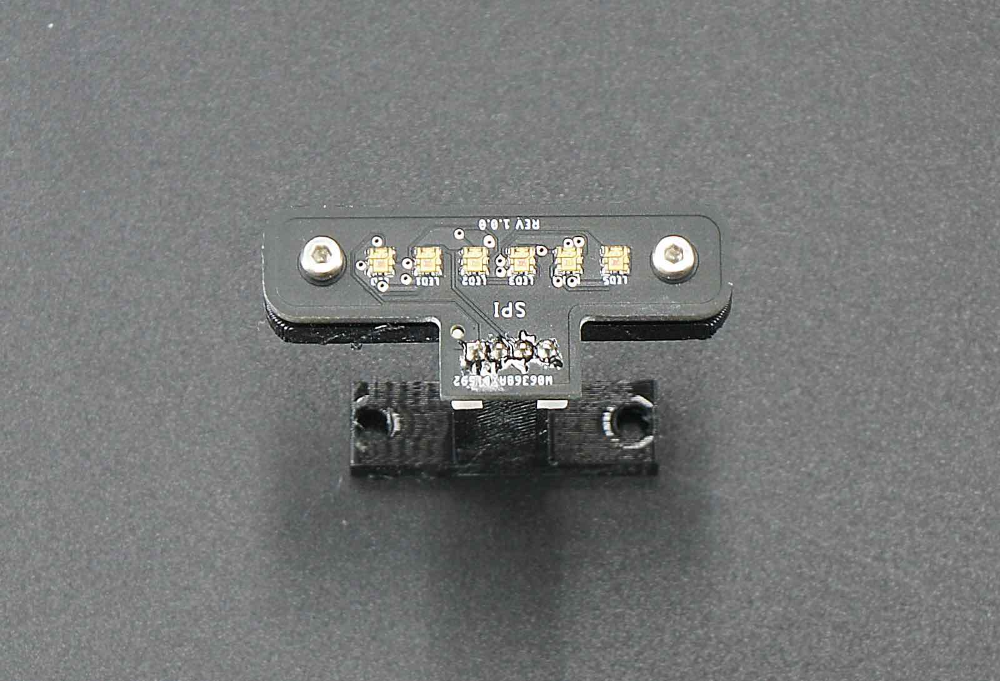
シャーシの組み立て（上側）
| 写真 | 部品または工具 | 個数 |
|---|---|---|
| 樹脂六角スペーサー（黒色）M3x18・・・・4 皿ネジM3x10・・・・4 ナットM3・・・・4 |
１袋 |
拡張ボディアッパーパネル １枚、拡張ボディアッパーパネルロワーパネル １枚
M3x12皿ネジ 4個 、M3ナット 6個
を用意します。

カメラマウントとアッパーパネルを結合します。アッパーパネルには皿もみがあります。皿ネジと合う面に刺します。

M3x12皿ネジを付属のナットドライバーで４箇所を取り付けます。


カメラモジュールの取り付けは完了です。

シャーシの組み立て（下側）
カーボンロワーパネルにLEDマウントを皿ネジとナットで取り付けます。
ネジの方向は、窪みがある方向から皿ネジを通します。

下記の矢印のところに、ネジを２箇所取り付けます。
新型LEDマウント(Rev2)の場合（コネクタは外向きに取り付けます。）

旧型LEDマウントの場合

ナットドライバーにて締め付けします。
新型LEDマウント(Rev2)の場合

旧型LEDマウントの場合
LEDマウント取り付け完了
新型LEDマウント(Rev2)の場合

旧型LEDマウントの場合

皿ネジ M3×10 4個 , 樹脂六角スペーサー（黒） M3×18 ４個を用意します。

ネジを締めます。
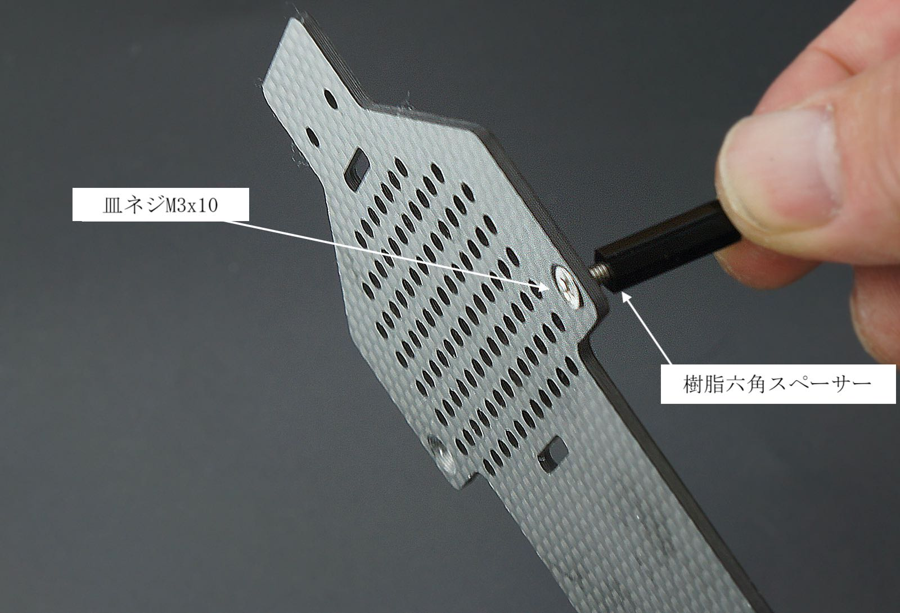
４箇所締めます。

Wi-FiとCPUファンの取り付け
| 写真 | 部品または工具 | 個数 |
|---|---|---|
 |
Jetson開発者キットB-01 | １台 |
Jetson開発者キット、DCファン、Wi-Fiモジュール、CPUファン取り付けジグ、ファン固定ネジ
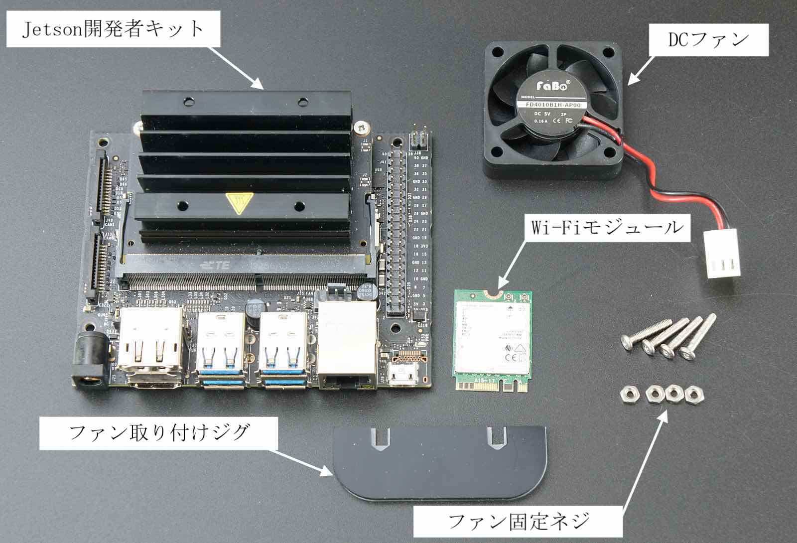
Wi-Fiアンテナケーブルを取り付けます。
| 写真 | 部品または工具 | 個数 |
|---|---|---|
 |
Intel Dual Bandwireless-AC 8265 Desktop Kit | １個 |
Wi-Fiモジュールセットの金具からスパナでアンテナを取り出し、アッパーパネルの左右に取り付けます。
ケーブルを付属のスパナで取り付けます。

次にWi-Fiモジュールを取り付けます。
Jetson開発者キットの２つのネジを付属の精密ドライバーで２箇所はずします。
※ネジの山かけに注意します。

Jetson開発者キットからJetson Nanoを取り外します。Jetson Nanoは、２箇所のつめで固定されているので、両側のつめを外側に指で軽く押します。

Jetson Nanoが斜めに上がります。

Jetson Nanoをはずすと、ネジとスロットが確認できます。

ドライバーでネジを取り除きます。

Wi-Fiモジュールをスロットに刺します。

黒いネジでモジュールを取り付けます。

２本のWi-FiアンテナケーブルとWi-Fiモジュールを繋ぎます。


JetsonNanoを開発者キットへ差し込み、ネジで取り付けます。
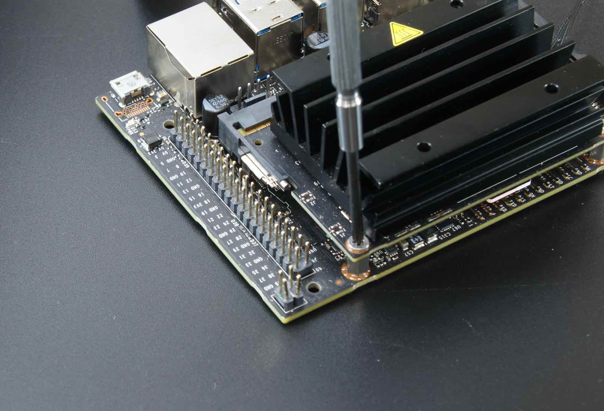
CPUファンを取り付けます。
| 写真 | 部品または工具 | 個数 |
|---|---|---|
 |
DCファン FD401B1H-AP00 DC5V,0.16A | １個 |
 |
CPUファン取り付けジグ | １個 |
 |
ファン固定ネジ M2.5×14・・・・4 ナットM2.5・・・・5(予備１) |
１袋 |
DCファンをヒートシンクの上に載せます。

CPUファン取り付けジグを用意します。

ナットをCPUファン取り付けジグに写真のように載せます。

CPUファン取り付けジグをヒートシンクのフィンの間に刺して、CPUファン固定ネジを刺します。

六角棒レンチでネジを締めます。
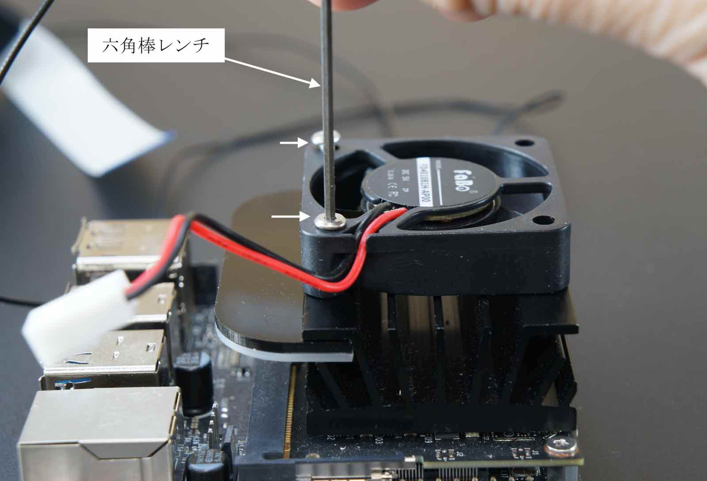
反対側も同じようにCPUファン取り付けジグを刺してネジを刺します。

同じように六角棒レンチで２箇所締めます。

ネジの締め付けが終わったら、CPUファン取り付けジグを取ります。

CPUファンのコネクタをJetson開発者ボードにあるコネクタに刺します。

以下の写真のようにコネクタを刺します。

CPUファン取り付けは完了です。

Jetson開発者キットとパネルとの結合準備
Jetson開発者キットをパネルに固定する為のスペーサーを取り付けます。
| 写真 | 部品または工具 | 個数 |
|---|---|---|
| 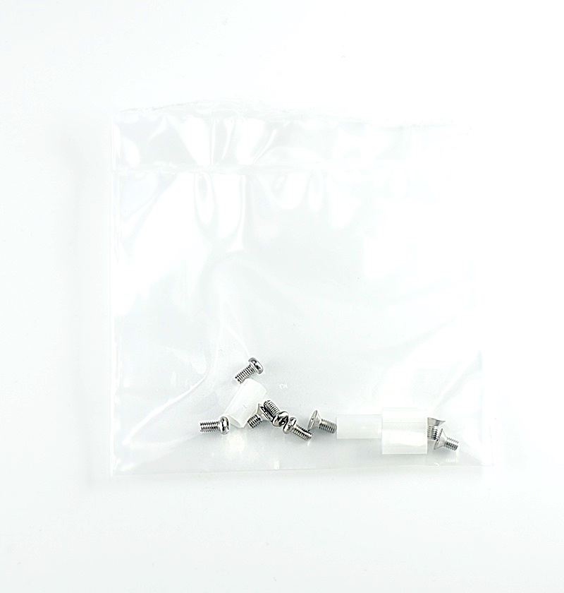 | 六角スペーサー（樹脂 両メネジ白10ミリ）・・・・4 皿ネジM2.6×5・・・・4 なべねじM2.6×5・・・・4 |
１袋 |
樹脂スペーサ、ねじを用意します。
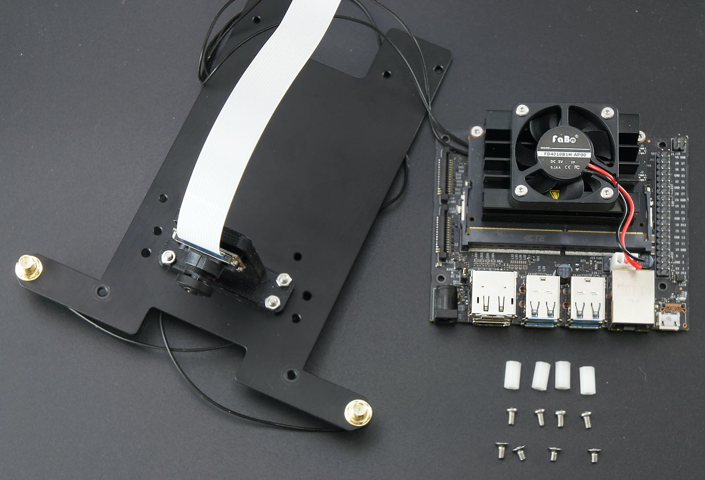
皿ねじM2.6を４箇所刺して、

スペーサを回転させ、取り付けます。

Jetson開発者キット固定用のスペーサー取り付け終了になります。
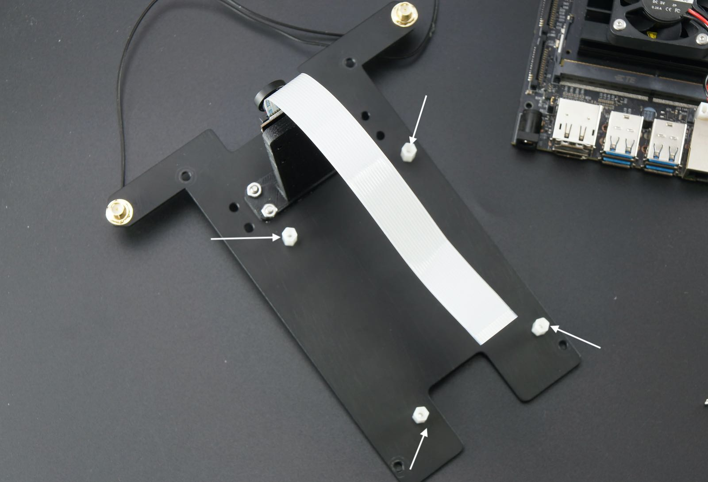
RCカーと結合
| 写真 | 部品または工具 | 個数 |
|---|---|---|
 |
RCカー本体 TT02 XBプロ エキスパートビルド ※完成品 ※車種はお選びいただくことはできません。 |
１枚 |
 |
Wi-Fiルーター WMR-433W2 ※ボディカラーはお選びいただくことはできません。 ※写真はホワイトです。 |
１個 |
 |
Wi-Fiルーター用 USBケーブル 標準A-マイクロB（A 右向き、B左向き）0.25m | １個 |
 |
モバイルバッテリー （BI-B3） ※新パッケージの場合 |
１個 |
 |
両面テープ | ３枚 |
 |
精密ドライバー P柄 | １本 |
矢印の箇所のネジ4本を取り外します。

モーターカバーのネジ4本を取り外し、モーターカバーを取り外します。


バッテリーを装着します。

ボディとロワーパネルを用意します。

ロワーパネルをTT-02車体に載せます。
ドライバーでRCカーからはずしたネジで４箇所締めます。

アッパーパネルとJetson Nano、両面テープ３枚、無線LANルーター、モバイルバッテリーを用意します。

モバイルバッテリーに２枚の両面テープを貼ります。

無線LANルーターに両面テープを貼ります。

無線LANルーターとモバイルバッテリーをアッパーパネルに貼り付け、ルーターの電源ケーブルを下記の写真のように接続します。

接続すると無線LANルーターが起動しますので、モバイルバッテリーのボタンをダブルクリックして電源を切ります。
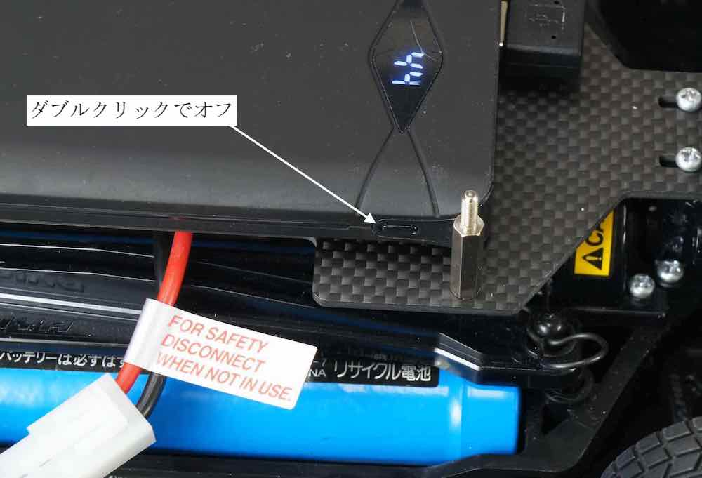
ダブルクリックすると電源がきれて、数値が表示されなくなります。

車体にアッパーパネルを載せて、ナットを４箇所をしめます。

ナットドライバーで固定します。

Jetson開発者キットの取り付け

ビスを用意して、Jetson開発者キットをスペーサーの上に載せます。
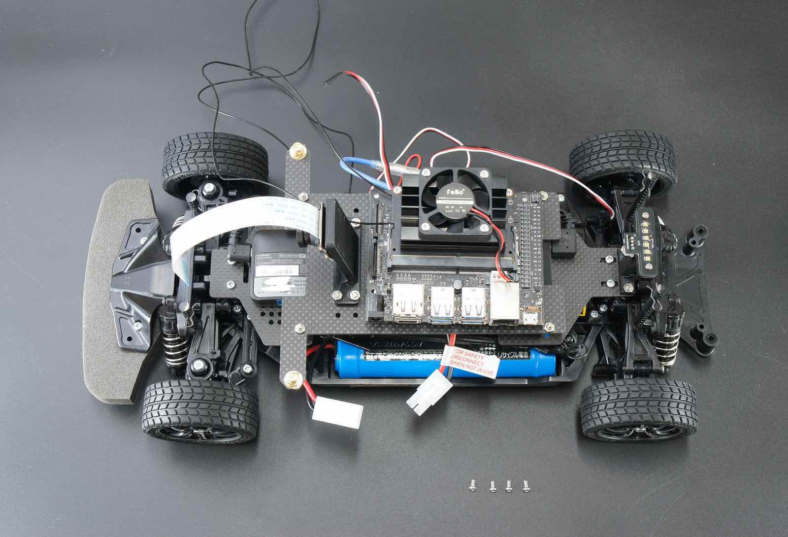
ドライバーで４箇所固定します。

Jetson開発者キット取り付け完了です。

カメラケーブル接続
Jetson Nano B01 開発者キットには、CAM0,CAM1の２つのカメラポートがありますが、CAM0にカメラケーブルを接続します。

Jetson Nanoのカメラ端子のコネクタ両サイドのロックを持ち上げます。

カメラケーブルを刺します。

コネクタのロック真ん中を指で押し、固定します。

Wi-Fiアンテナケーブルを結束
| 写真 | 部品または工具 | 個数 |
|---|---|---|
 |
結束バンド | １枚 |
Wi-Fiアンテナケーブルを結束バンドで束ねます。

束ねたケーブルはJetson Nano基板の下に入れます。

ジャンパーピンの設定
DCジャックからJetson開発者キットへ給電しますので、下の写真のように、ジャンパーピンをオープンからショートにします。
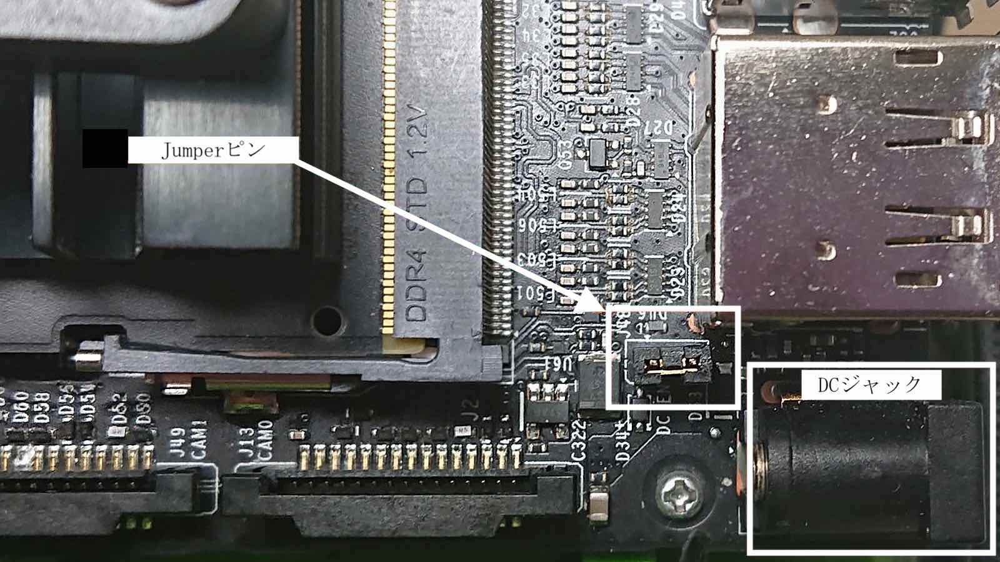
コントローラーボードの装着
| 写真 | 部品または工具 | 個数 |
|---|---|---|
 |
FaBo #612 コントローラーボード | １枚 |
コントローラーボードの取り付け完了
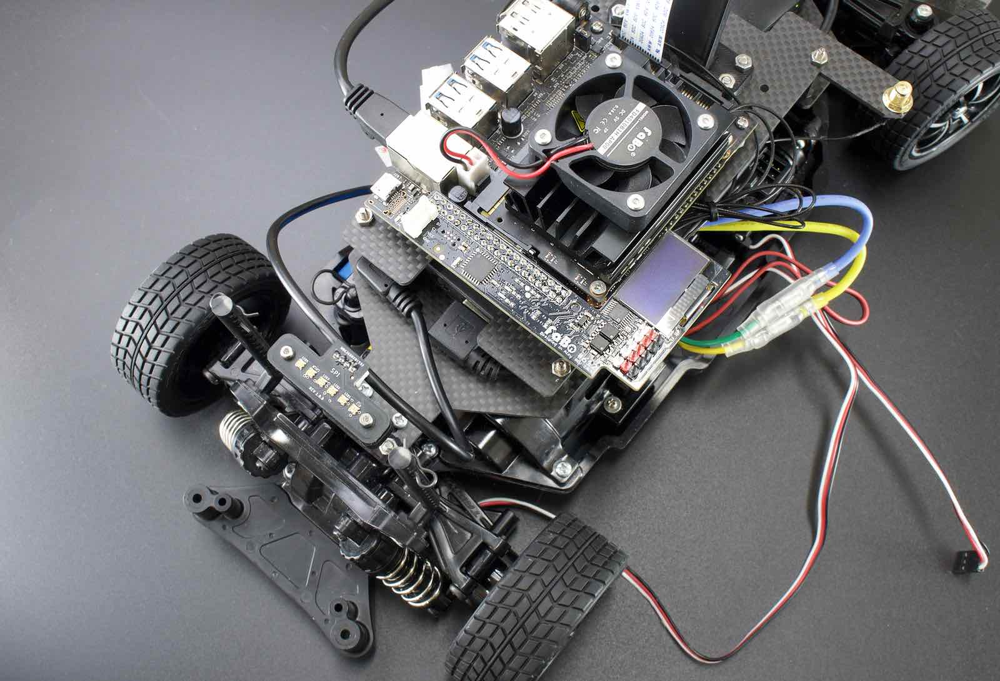
RCカー信号の配線
| 写真 | 部品または工具 | 個数 |
|---|---|---|
 |
RCケーブル３ピン メスプラグ 3本 | １セット |
RCカーの信号入力ケーブルを確認します。スピードコントローラから繋がっているケーブル、サーボモータに繋がっているケーブル

コントローラボードのTHをスピードコントローラ、スピードコントローラのSTをサーボに繋ぎます。

RCカー受信機出力している３つの信号をコントローラボードへ繋ぎます。
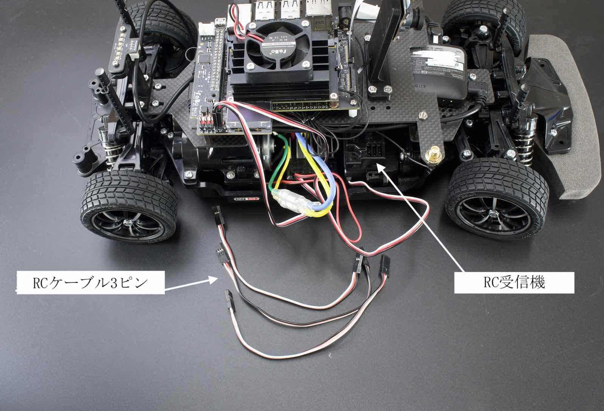
RCカー受信機からは、１〜３チャンネルの信号が出力されます。

３ピンケーブルを受信機に各ピンそれぞれ繋ぎます。

＃６１２コントローラボードの１、２、３へ接続できましたら、RCとの信号配線は完了です。

ルーターとの配線
| 写真 | 部品または工具 | 個数 |
|---|---|---|
 |
LANケーブル 0.15m | １本 |
無線LANルーターとJetson開発キットをLANケーブルで繋ぎます。

LEDボード
| 写真 | 部品または工具 | 個数 |
|---|---|---|
 |
FaBo 4ピンケーブル 0.15m | １本 |
LEDボードとコントローラボードを配線します。

Wi-Fiアンテナの固定
Wi-Fiアンテナを回してたてます。

Wi-Fiアンテナ取り付け完了。

SDカード挿入
| 写真 | 部品または工具 | 個数 |
|---|---|---|
 |
マイクロSDカード(32GB),SDカードケース サムスンEVO |
１個 |
Jetson NanoにSDカードをSDカードの端子がこちらから見えるように挿入します。

Jetson開発者キットに電源を投入します。バッテリーを切断しておき、RCカーの電源は、急発進や暴走の原因となりますので、絶対に電源はオフにします。確認できたら、DCジャックをDCプラグに繋ぎます。

電源投入
| 写真 | 部品または工具 | 個数 |
|---|---|---|
 |
単三アルカリ乾電池 4本 （プロポに使用） ※写真と異なる場合がございます。 |
１枚 |
モバイルバッテリーの電源をONします。
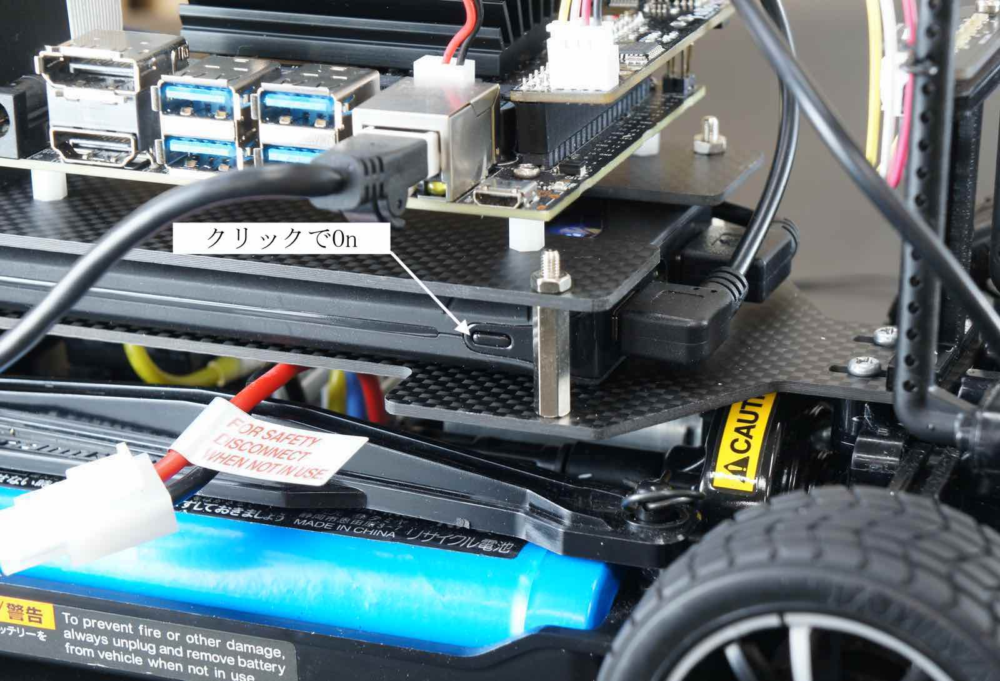
おおよそのバッテリー残量が表示される。

Jetson開発者キットの緑色の各LEDが発光します。

コントローラーボードのOLEDにIPアドレス、メモリ使用率など表示されます。

コネクタを接続し、RCカーの電源を繋ぎます。
※電源投入時は、特にRCカーの暴走に注意してください。

RCカーのスイッチをスライドさせ、RCカーに電源を投入します。
※電源投入時は、特にRCカーの暴走に注意してください。

TT-02のプロポに単三電池４本入れます。

プロポの電源をONします。プロポの赤色ランプが点灯します。

LEDが緑色のときは、通常のRCカーとして操作モードになります。（RCカーモード）
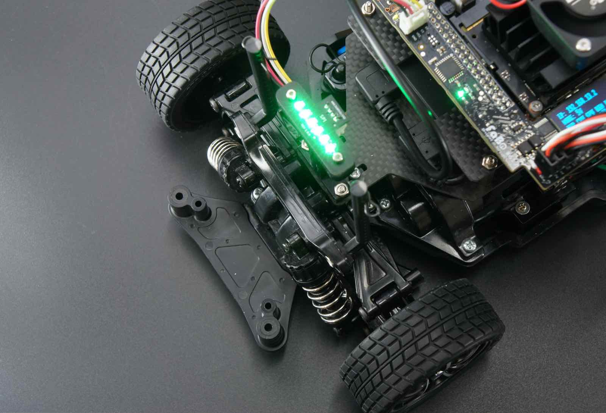
プロポの裏側のボタンを押すとモードが切り替えられます。

LEDが赤色のときは、JetsonがRCカーを操縦するモードになります。（AIモード）

動作が確認できましたら、以上JetRacerKitの組み立ては完了となります。 カメラにレンズキャップがついている場合は取り外します。 お疲れ様でした。
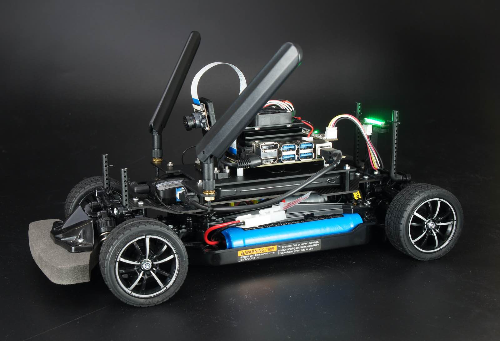